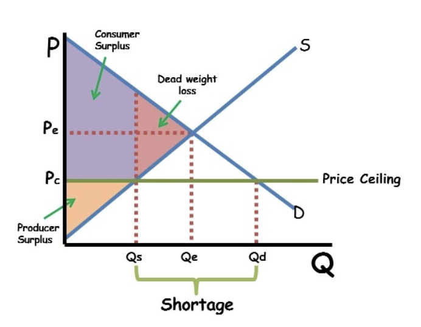
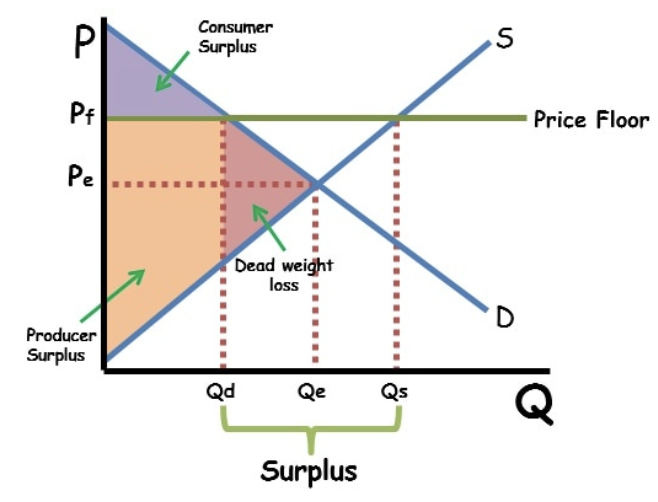
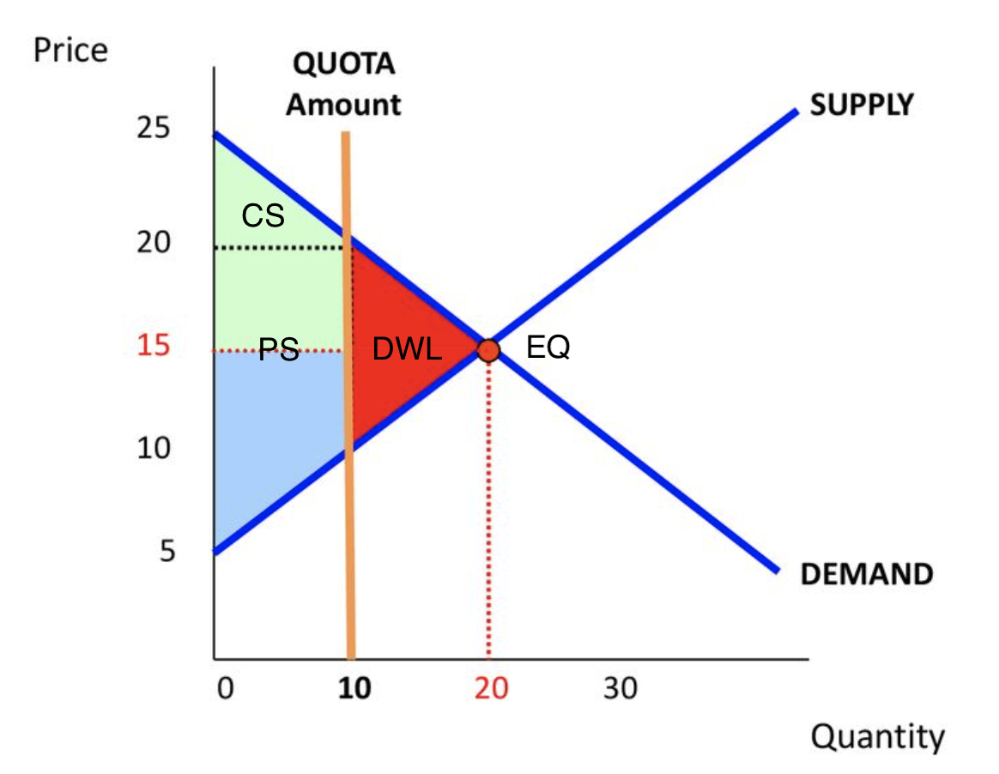
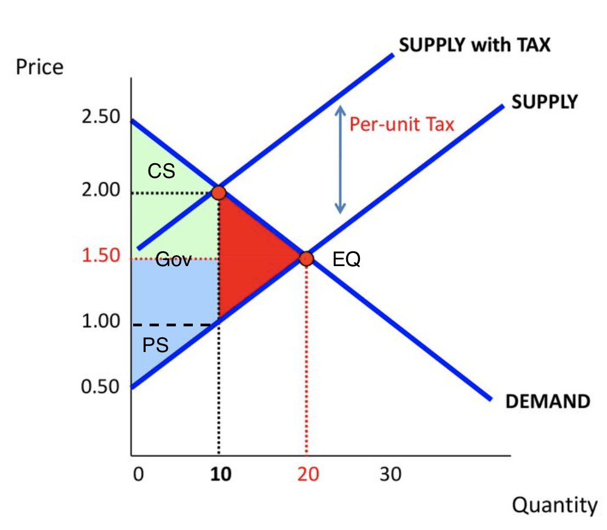

Instead of letting market forces determine prices, government regulations on prices are referred to as price control .
Consumer Surplus: The difference between the price a buyer is willing to pay and the price they actually pay.
Producer Surplus: The difference between the price a producer is willing to sell something for and the price they actually receive for it (or the cost to make it).
Deadweight Loss(DWL): A cost incurred by society as a result of market inefficiency, which happens when supply and demand are out of balance.
Price Ceiling: A price ceiling is the highest price an item may be sold for, as determined by the government. The market cannot reach equilibrium if the government imposes an effective price ceiling. The quantity supplied will be less than the quantity demanded at the artificially low price. A shortage separates the two differences. Deadweight loss will result from this, and the market will cease to be allocatively efficient.
A price ceiling that is set above equilibrium is ineffective.

Price Floor: A price floor is the lowest amount that can be charged for a good, as determined by the government. The market cannot establish equilibrium if the government imposes an effective price floor that is higher than the market equilibrium price. The quantity required will be less than the quantity supplied at the artificially high price. There is a surplus between the two. Deadweight loss will result from this, and the market will cease to be allocatively efficient.
A price floor that is set below equilibrium is ineffective.

Quota: A quota is a trade limitation put in place by the government that restricts how many or how much money may be spent on items that a nation can import or export at one time. It will create a deadweight loss.
A quota that is set to right equilibrium is ineffective.

Tax: A tax is levied on imported products and services. Tariffs are used to limit trade since they raise the cost of imported goods and services, making them more expensive for consumers. Tariffs increase government revenue at the expense of consumers and international producers. It creates a DWL.
